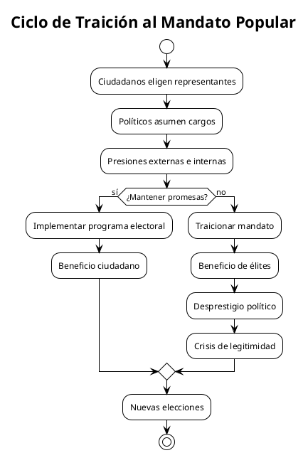
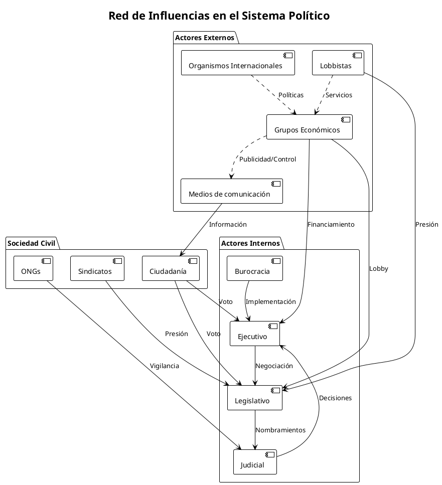
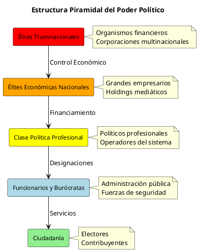

El circo de la política: Desprestigio y traición al mandato popular
El circo de la política: Desprestigio y traición al mandato popular
Introducción
La política contemporánea ha adquirido características que la asemejan más a un espectáculo teatral que a un ejercicio serio de gobierno y representación ciudadana. Este fenómeno, observable tanto en democracias consolidadas como emergentes, plantea interrogantes fundamentales sobre la naturaleza misma del contrato social y las consecuencias geopolíticas de una creciente desconexión entre élites políticas y ciudadanía.
El "circo político" no es meramente una metáfora peyorativa, sino una descripción analítica de un sistema donde la forma ha superado al fondo, donde la imagen prevalece sobre la sustancia y donde los actores políticos parecen más preocupados por mantener su estatus dentro del sistema que por cumplir con el mandato que les otorgó el pueblo.
El Teatro de la Representación Política
La Performatividad como Estrategia de Poder
La política moderna se ha transformado en un ejercicio performativo donde los políticos actúan roles predefinidos ante audiencias específicas. Esta teatralización no es accidental, sino una estrategia consciente para mantener el poder mientras se evade la responsabilidad real de gobernar.
Los medios de comunicación y las redes sociales han amplificado este fenómeno, creando una realidad paralela donde lo que importa no es lo que se hace, sino cómo se presenta lo que se hace. Los políticos se han convertido en actores cuyo principal objetivo es mantener su popularidad en lugar de implementar políticas efectivas.
La Profesionalización de la Clase Política
Una de las características más preocupantes del circo político contemporáneo es la emergencia de una clase política profesional que se perpetúa en el poder independientemente de los resultados de su gestión. Esta clase ha desarrollado mecanismos sofisticados para mantenerse en el sistema político, incluyendo:
- Rotación entre partidos políticos según conveniencia
- Creación de redes clientelares que garantizan apoyo electoral
- Manipulación de marcos normativos para favorecer su permanencia
- Establecimiento de alianzas tácitas con otros miembros de la clase política
Análisis de las Líneas de Poder Internas y Externas
| Nivel | Actor | Líneas Internas | Líneas Externas | Influencia |
|---|---|---|---|---|
| Nacional | Ejecutivo | Gabinete, Asesores, Burocracia | Empresarios, Medios, Lobby Internacional | Alta |
| Nacional | Legislativo | Bancadas, Comisiones, Staff | Grupos de Presión, Think Tanks, Academia | Media-Alta |
| Nacional | Judicial | Magistrados, Funcionarios | Colegios Profesionales, ONG, Prensa | Media |
| Regional | Gobernadores | Equipos Locales, Alcaldes | Empresas Regionales, Caciques Locales | Media |
| Local | Alcaldes | Concejales, Funcionarios | Comerciantes, Líderes Comunitarios | Baja-Media |
| Transversal | Partidos Políticos | Militancia, Dirigencia | Financiadores, Consultores, Medios | Variable |
| Transversal | Medios | Editorialistas, Periodistas | Anunciantes, Grupos Económicos, Gobierno | Alta |
| Transversal | Sociedad Civil | ONG, Sindicatos, Gremios | Cooperación Internacional, Fundaciones | Baja-Media |
| Origen del Mandato | Mediadores | Distorsiones | Resultado Final |
|---|---|---|---|
| Voluntad Ciudadana | Partidos Políticos | Promesas Incumplidas | Políticas Contrarias |
| Programa Electoral | Asesores/Lobbistas | Intereses Particulares | Beneficio de Élites |
| Demandas Sociales | Medios de Comunicación | Agenda Setting | Temas Irrelevantes |
| Necesidades Básicas | Burocracia | Ineficiencia/Corrupción | Servicios Deficientes |
| Aspiraciones Colectivas | Élites Económicas | Captura Regulatoria | Concentración de Poder |
Diagramas de Flujo del Sistema Político



Mecanismos de Desprestigio y Traición
La Inversión del Mandato Popular
El fenómeno más grave del circo político contemporáneo es la inversión sistemática del mandato popular. Los políticos, una vez en el poder, tienden a servir intereses que no coinciden con aquellos por los cuales fueron elegidos. Esta inversión se manifiesta en:
- Políticas Contrarias a las Promesas Electorales: Implementación de medidas que van en dirección opuesta a lo prometido durante la campaña.
- Privilegio de Intereses Particulares: Atención preferencial a grupos de presión económicos o políticos en detrimento del interés general.
- Alejamiento de las Bases Sociales: Pérdida progresiva de contacto con los sectores sociales que los eligieron.
- Profesionalización del Cargo: Conversión del cargo público en una fuente de beneficio personal y familiar.
La Economía Política del Desprestigio
El desprestigio político no es un efecto colateral, sino una consecuencia lógica de un sistema que ha perdido su conexión con la finalidad democrática. Este desprestigio genera un círculo vicioso donde:
- Los ciudadanos pierden confianza en las instituciones
- Los políticos se alejan aún más de la ciudadanía
- Se profundiza la crisis de legitimidad
- Emergen alternativas autoritarias o demagógicas
Consecuencias Geopolíticas
Debilitamiento de la Soberanía Nacional
Cuando los sistemas políticos nacionales se deslegitiman internamente, se vuelven más vulnerables a presiones externas. Los gobiernos débiles tienden a buscar legitimidad en el reconocimiento internacional, lo que puede llevarlos a adoptar políticas que favorecen intereses extranjeros por encima de los nacionales.
Crisis de Gobernabilidad Regional
El desprestigio político no es un fenómeno aislado, sino que tiende a propagarse regionalmente, generando crisis de gobernabilidad que afectan la estabilidad geopolítica de áreas enteras. América Latina, Europa del Este y África subsahariana muestran patrones similares de crisis de legitimidad política.
Emergencia de Nuevos Actores Geopolíticos
La crisis de los sistemas políticos tradicionales ha dado lugar a la emergencia de nuevos actores en el escenario geopolítico: corporaciones transnacionales, organizaciones criminales, movimientos religiosos y grupos paramilitares que llenan el vacío dejado por estados debilitados.
El Rol de los Medios en la Teatralización
Los medios de comunicación han jugado un papel fundamental en la conversión de la política en espectáculo. Esta transformación no es neutra, sino que responde a intereses específicos:
La Agenda Setting como Control Político
Los medios no solo informan sobre política, sino que definen qué temas son relevantes y cómo deben ser discutidos. Esta capacidad de establecer la agenda les otorga un poder considerable sobre el proceso político, poder que frecuentemente es ejercido en beneficio de sus propietarios o anunciantes.
La Espectacularización de la Política
La necesidad de generar audiencia ha llevado a los medios a convertir la política en entretenimiento. Los debates políticos se asemejan cada vez más a reality shows, donde importa más el drama personal que las propuestas programáticas.
Estrategias de Resistencia y Alternativas
Democracia Participativa
Una de las respuestas más prometedoras al circo político es el desarrollo de mecanismos de democracia participativa que permitan a los ciudadanos ejercer control directo sobre las decisiones que los afectan. Estos mecanismos incluyen:
- Presupuestos participativos
- Consultas ciudadanas vinculantes
- Revocatoria de mandatos
- Iniciativas legislativas populares
Transparencia y Rendición de Cuentas
El desarrollo de sistemas robustos de transparencia y rendición de cuentas puede ayudar a reducir los espacios para la corrupción y la traición al mandato popular. Esto incluye:
- Acceso público a información gubernamental
- Declaraciones patrimoniales obligatorias
- Sistemas de seguimiento a promesas electorales
- Auditorías ciudadanas
Hacia una Nueva Gramática Política
Recuperación del Sentido Público
La superación del circo político requiere una recuperación del sentido público de la política. Esto implica:
- Redefinición del Perfil del Político: Transición del político-actor al político-servidor público.
- Fortalecimiento de la Cultura Cívica: Educación ciudadana que permita una participación política más informada y exigente.
- Institucionalización de la Participación: Creación de espacios institucionales para la participación ciudadana directa.
- Control Social del Poder: Establecimiento de mecanismos efectivos de control ciudadano sobre el ejercicio del poder político.
Innovación Institucional
La crisis del sistema político tradicional abre oportunidades para la innovación institucional. Algunas alternativas en desarrollo incluyen:
- Gobiernos Líquidos: Sistemas que combinan representación y participación directa
- Tecnologías Cívicas: Uso de tecnología para facilitar la participación ciudadana
- Sorteocracia: Selección aleatoria de representantes para ciertos cargos
- Mandatos Imperativos: Obligación legal de cumplir promesas electorales
Conclusiones
El circo de la política contemporánea representa una crisis profunda de los sistemas democráticos tal como los conocemos. Esta crisis no es meramente coyuntural, sino estructural, y requiere respuestas igualmente estructurales.
La traición al mandato popular no es un accidente, sino una característica sistemática de un modelo político que ha perdido su conexión con la finalidad democrática. La profesionalización de la clase política, la influencia desproporcionada de grupos económicos, la teatralización mediática y la pérdida de espacios de participación ciudadana han creado un sistema autorreferencial que se reproduce independientemente de su capacidad para responder a las demandas sociales.
Las consecuencias geopolíticas de esta crisis son significativas. Estados debilitados internamente se vuelven más vulnerables a presiones externas, generando inestabilidad regional y facilitando la emergencia de actores no estatales que compiten por el control territorial y poblacional.
Sin embargo, la crisis también abre oportunidades. La pérdida de legitimidad de los sistemas políticos tradicionales está generando experimentación con nuevas formas de organización democrática que podrían resultar en sistemas más representativos y eficaces.
La superación del circo político requerirá no solo reformas institucionales, sino un cambio cultural profundo que recupere el sentido público de la política y fortalezca la capacidad ciudadana de control sobre el poder. Solo así será posible restaurar la conexión entre representantes y representados que es esencial para el funcionamiento democrático.
Referencias
- Bourdieu, P. (2001). El campo político. La Paz: Plural Editores.
- Castells, M. (2009). Comunicación y poder. Madrid: Alianza Editorial.
- Crouch, C. (2004). Posdemocracia. Madrid: Taurus.
- Dahl, R. (2006). On Political Equality. New Haven: Yale University Press.
- Diamond, L. (2015). "Facing up to the Democratic Recession". Journal of Democracy, 26(1), 141-155.
- Levitsky, S. & Ziblatt, D. (2018). Cómo mueren las democracias. Barcelona: Ariel.
- Mair, P. (2013). Ruling the Void: The Hollowing of Western Democracy. London: Verso.
- Mouffe, C. (2007). En torno a lo político. Buenos Aires: Fondo de Cultura Económica.
- Przeworski, A. (2019). Crisis of Democracy. Cambridge: Cambridge University Press.
- Rosanvallon, P. (2008). La legitimidad democrática: imparcialidad, reflexividad, proximidad. Buenos Aires: Manantial.
- Schedler, A. (2013). The Politics of Uncertainty: Sustaining and Subverting Electoral Authoritarianism. Oxford: Oxford University Press.
Tilly, C. (2007). Democracy. Cambridge: Cambridge University Press.
El Concepto de "Política": Análisis Crítico de su Evolución Histórica y Percepción Contemporánea